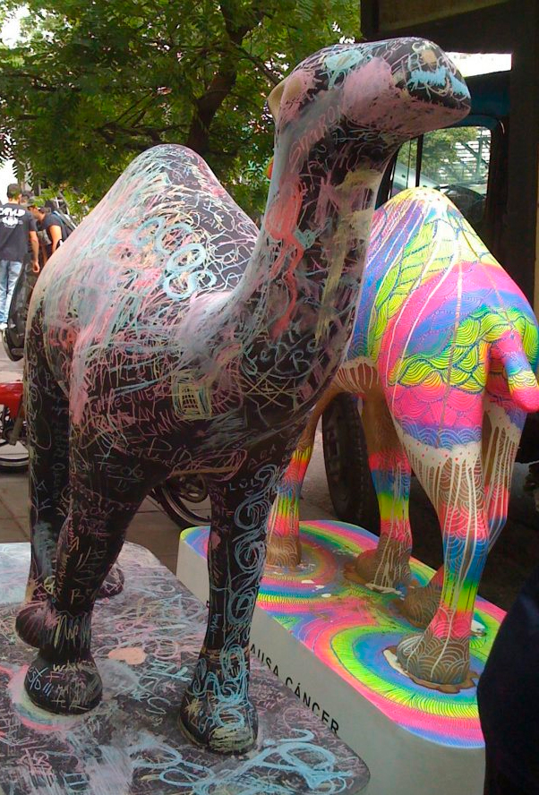

Camel
Tergopol & Fibra de Vidrio
Proyecto realizado con tergopol tallado a mano y luego cubierto con fibra de vidrio. A pedido para una campaña publicitaria de Camel.

Proyecto realizado con tergopol tallado a mano y luego cubierto con fibra de vidrio. A pedido para una campaña publicitaria de Camel.

Ángeles realizados en yeso para un cliente que requería hacer moldes. Un trabajo que requiere mucha técnica y paciencia.
Mascarás coloridas realizadas con yeso y luego pintadas a mano. Un pedido de la empresa de obras de teatro Artspot.